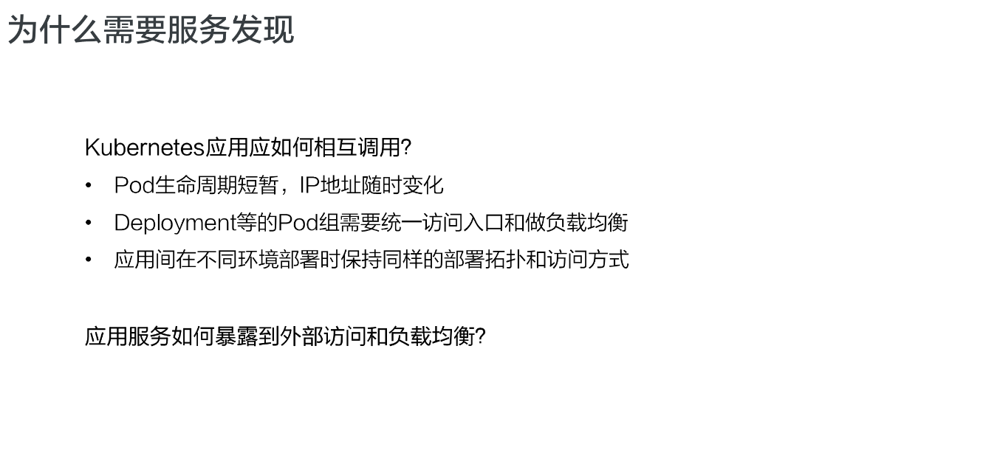
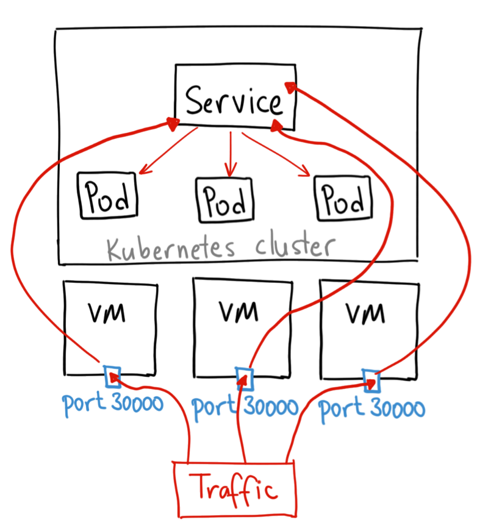

理解Kubernetes Services
本文是CNCF × Alibaba 云原生技术公开课的第八章理解Kubernetes Services学习笔记。
关键词：k8s
需求来源
为什么需要服务发现
传统的应用部署实在特定的机器上面部署，此时知道怎么去调用别的机器的IP地址。但是在K8s集群中应该是通过Pod去部署，而Pod的生命周期过程中，比如创建或者销毁，此时IP地址都会发生变化，不能指定IP去访问指定的应用。
K8s的应用部署中需要创建一个Pod组，而这些Pod组合需要一个统一的访问接口，以及怎么去控制流量负载均衡在这个组里，比如测试环境、预发环境和线上环境。部署过程中需要保持同样的部署模板以及访问方式，这样就可以用同一套应用的模板在不同的环境中直接发布。

Service：K8s中服务发现和负载均衡
应用总是需要暴露到外部去访问，而Pod的网络和机器的网卡并不是一个IP段的，那么怎么让Pod暴露到外部访问呢？此时就需要服务发现。
K8s中的Service实现了服务发现和负载均衡。在K8s架构里，K8s Service向上提供了外部网络以及Pod网络的访问：外部网络可以通过Service访问，Pod网络也可以通过K8s Service访问；
向下对接了一组Pod：可以通过K8s Service的方式负载均衡到一组Pod上，外部网络可以通过Service去访问Pod，不同Pod之间也可通过Service访问彼此。Service为他们互相之间访问提供了统一的IP地址。
用例解读
Service语法
1 | apiVersion: v1 |
创建和查看Service
创建Service
1 | kubectl apply -f service.yaml |
查看Service
1 | kubectl describe svc get-hostname |
- IP：集群内部可以访问的虚拟IP
- External IP：向集群外部暴露的IP
- Endpoints：通过Selector筛选出的Pod IP
当Service创建之后，会在集群内创建一个虚拟的IP地址以及端口，集群内部的所有Node和Pod都可以通过这个IP地址和端口访问到这个Service。
Service把用Selector筛选出来的Pod和IP地址挂载到后端。这样通过Service的IP地址访问时，就可以负载均衡到后端Pod。
Service有个默认设置.spec.sessionAffinity=None，意思是当流量通过Service时，随机选择一个Pod进行负载，这样就实现了负载均衡。
当某一个Pod终止，Service会自动从后端删除这个Pod。就算Pod的生命周期有变化，从外部看，Service的"端点"是不会发生变化的。
集群内部访问Service
- 可以通过Service的虚拟IP访问，可以通过
kubecetl get svc查看 - 直接访问服务名，依靠DNS解析。
- 相同的Namespace可以直接通过Service的名字访问到声明的Service。
- 不同的Namespace可以通过
service.namespace的方式访问这个Service。
- 通过环境变量访问。同一个Namespace里的Pod启动时，K8s会把Service中的一些IP地址，端口以及一些配置信息通过环境变量的方式发放到K8s的Pod里。Pod可以通过读取环境变量的方式访问到同一Namespace的环境变量。
举个例子，一个名称为 redis-master 的 Service 暴露了 TCP
端口 6379， 同时给它分配了 Cluster IP 地址 10.0.0.11，这个 Service
生成了如下环境变量：
1 | REDIS_MASTER_SERVICE_HOST=10.0.0.11 |
必须在创建服务以后才能在Pod中通过环境变量的方式访问。
Headless Service
Service创建的时候指定clusterIP:None，此时K8s不会给Service分配一个虚拟IP地址。
Pod可以通过service_name用DNS解析的方式解析到所有后端Pod的IP地址，通过DNS的A记录的方式解析到所有后端的Pod的地址，由客户端选择一个后端的IP地址，这个A记录会随着Pod的生命周期变化，返回的A记录列表也会发生变化。
这种方式要求客户端应用根据DNS返回的A记录，自己选择一个合适的地址去访问Pod。
当集群中的pod访问my-service时，会直接解析到所有的service对应的IP地址，返回给Pod，然后Pod自己选择IP地址去直接访问。
向集群外部暴露Service
NodePort
NodePort 服务是引导外部流量到你的服务的最原始方式。NodePort，正如这个名字所示，在所有节点（虚拟机）上开放一个特定端口，任何发送到该端口的流量都被转发到对应服务。

LoadBalancer
LoadBalancer 服务是暴露服务到 internet 的标准方式。在 GKE 上，这种方式会启动一个 Network Load Balancer，它将给你一个单独的 IP 地址，转发所有流量到你的服务。

如果你想要直接暴露服务，这就是默认方式。所有通往你指定的端口的流量都会被转发到对应的服务。它没有过滤条件，没有路由等。这意味着你几乎可以发送任何种类的流量到该服务，像 HTTP，TCP，UDP，Websocket，gRPC 或其它任意种类。
这个方式的最大缺点是每个用到的 LoadBalancer 都需要付费，这种方式仅在大型云服务公司上实现，这将是非常昂贵的。
External IP
和LoadBalancer相比，LoadBalancer被某一个Node节点替换了，通过Node节点暴露的IP对外部提供服务。
externalIPs不会被 Kubernetes 管理，它属于集群管理员的职责范畴。
虚拟IP和Service代理
在K8s集群中，每个Node运行一个kube-proxy进程，kube-proxy负责为Service实现了一种虚拟IP的形式。
为什么不使用DNS轮询
为什么不配置具有个A值或AAAA值的DNS记录，并依靠轮询名称解析？
主要有以下几个原因：
- DNS的实现的历史由来已久，DNS不遵守TTL，并且在nameserver查找结果到期后对其进行缓存；
- 有些应用程序仅执行一次DNS查找，并无限期缓存结果；
- 即使应用和库进行了适当重新解析，DNS记录上的TTL值低或者为零可能会给DNS带来高负载，从而使管理变得困难。
userspace代理模式
kube-proxy会监视Kubernetes API Server对Service对象和Endpoint对象的添加和移除操作。
对于每个Service，会在本地Node随机打开一个端口。任何连接到代理端口的请求，都会被代理到Service的后端Pod中的某个上面。使用Pod的策略是kube-proxy基于.spec.SessionAffinity来确定的。
最后配置iptables规则，捕获到到达该Service的ClusterIP（虚拟IP）和Port的请求，并重定向到代理端口，代理端口再代理请求到后端Pod。
默认情况下。userspace代理模式的kube-proxy使用轮转算法选择后端Pod。

iptables代理模式
kube-proxy会监视Kubernetes API Server对Service对象和Endpoint对象的添加和移除操作。
对于每个Service，配置iptables规则，将到达该Service的ClusterIP和端口请求重定向到Service的一组后端的某个Pod上。
对于每个Endpoints，配置iptables规则，这个规则会选择一个后端组合。
这里的Endpoints指的是
后端组合的含义还不是很清楚，日后补充。
默认的策略是，kube-proxy在iptables模式下随机选择一个后端。
注意：如果kube-proxy在iptables模式下运行，若选中的第一个Pod没有响应，则连接失败。而在userspace模式下，kube-proxy检测到无法链接到第一个Pod时，会自动使用其他后端Pod重试。
可使用Pod就绪探测器验证后端Pod可以正常工作，使得iptables模式下的kube-proxy仅看到测试正常的后端。这样意味着可以避免将流量通过kube-proxy发送到失败的Pod。

IPVS代理模式
在ipvs模式下，kube-proxy监视kubernetes服务和端点，调用netlink接口相应的创建IPVS规则，定期将IPVS规则与Kubernetes服务和端点同步。
控制循环确保IPVS状态和所需状态匹配，访问服务时，IPVS将流量定向到Pod之一。
IPVS代理基于类似iptables模式下的netfilter挂钩函数，但是使用哈希表作为基础数据结构，并且在内核空间工作
与iptables模式下的kube-proxy相比，IPVS模式下的kube-proxy重定向通信的延迟要短，并且在同步规则时具有更好的性能。与其他代理模式相比。IPVS模式还支持更高的网络流量吞吐量。
IPVS还提供了更多选项来平衡后端Pod的流量：
- rr：轮替（Round-Robin）
- lc：最小链接（Least Connection），即打开数量最少者优先
- dh：目标地址哈希（Destination Hashing）
- sh：源地址哈希（Source Hashing）
- sed：最短预期延迟（Shortest Expected Delay）
- nq：从不排队（Never Queue）
Note：
要在IPVS模式下运行kube-proxy，必须在启动kube-proxy之前使IPVS在节点上可用。
当kube-proxy以IPVS代理模式启动时。他将验证IPVS内核模块是否可用。如果未检测到IPVS内核模块，则Kube-proxy回退到以iptables代理模式运行。

在这些代理模型中，绑定到服务IP的流量：在客户端不了解kubernetes或服务或Pod的任何信息的情况下，将Pod代理到适合的后端。
如果需要确保每次来自特定客户端的链接传递到同一个Pod，则可以通过将.spec.sessionAffinity设置ClientIP（默认值是None），来基于客户端的IP地址选择会话关联。还可以通过适当设置.spec.sessionAffinityConfig.clientIP.timeoutSeconds设置最大会话停留时间（默认时间为10800秒，即3小时）。
架构设计
K8s服务发现以及K8s Service是如上的一个整体架构。
K8s的master节点里面有API Server，API Server统一管理K8s所有对象，所有的组件都会注册到API Server上去监听对象的变化。
这里面有三个关键组件：
- Cloud Controller Manager，CCM：负责配置LoadBalancer的一个负载均衡器提供给外部访问；
- CoreDNS：K8s集群的DNS组件，通过CoreDNS观测API Server里面的Service后端Pod的变化，配置Service的DNS解析，实现通过Service的名字直接访问到Service的虚拟IP，或者Headless类型的Service中的IP列表解析；
- Kube-proxy：K8s网络节点代理，代理通过监听Service以及Pod变化，然后配置集群中的Node、Pod或者ClusterIP的访问；
例如Client Pod去访问Service，首先Pod拿Service IP请求，请求到了宿主机网络后，就被kube-proxy所配置的iptables或者IPVS做拦截处理，之后负载均衡到每一个实际的后端Pod，这样就实现了负载均衡和服务发现。
对于来自外部的流量，通过外部负载均衡器管理器（CCM）监听Service的变化，配置LoadBalancer，然后转发到节点的NodePort上，NodePort通过Kube-proxy配置iptables规则，把NodePort的流量转换成ClusterIP，然后转换成后端Pod的IP地址，这样就实现了负载均衡和服务发现。